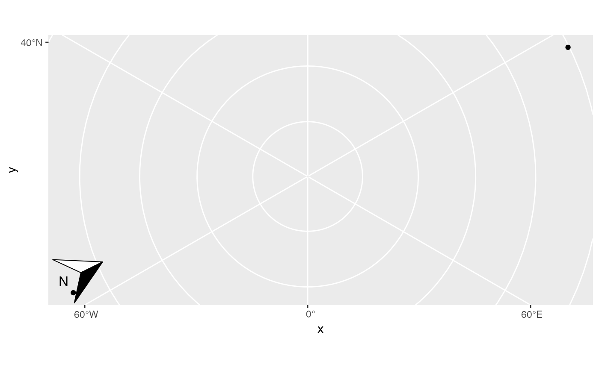
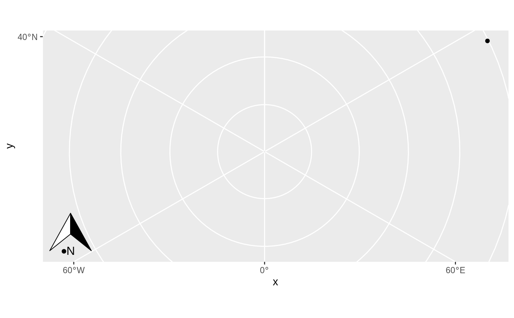

Spatial-aware north arrow
An object of class GeomNorthArrow (inherits from Geom, ggproto, gg) of length 5.
See Aesthetics
Height and width of north arrow
Padding between north arrow and edge of frame
Override the rotation of the north arrow (degrees conterclockwise)
A grob or callable that produces a grob that will be drawn as the north arrow. See north_arrow_orienteering for options.
A ggplot2 layer
The following can be used as parameters or aesthetics. Using them as
aesthetics is useful when facets are used to display multiple panels,
and a different (or missing) scale bar is required in different panels.
Otherwise, just pass them as arguments to annotation_north_arrow().
which_north: "grid" results in a north arrow always pointing up; "true" always points to the north pole from whichever corner of the map the north arrow is in.
location: Where to put the scale bar ("tl" for top left, etc.)
cities <- data.frame(
x = c(-63.58595, 116.41214),
y = c(44.64862, 40.19063),
city = c("Halifax", "Beijing")
)
ggplot(cities) +
geom_spatial_point(aes(x, y), crs = 4326) +
annotation_north_arrow(which_north = "true") +
coord_sf(crs = 3995)

ggplot(cities) +
geom_spatial_point(aes(x, y), crs = 4326) +
annotation_north_arrow(which_north = "grid") +
coord_sf(crs = 3995)
